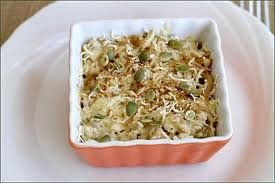

Gratin de pâtes brocolis Boursin
Ingredients
4×
- 200 g de pâtes
- 1 brocoli
- 2 barquettes de lardons
- 1 oignon
- 1 Boursin
- 1 c. à s. de crème fraîche
- sel
- poivre
- fromage râpé

Préparation
Étape 1
Cuire al dente 200 g de pâtes et 1 brocoli. Rissoler 2 barquettes de lardons avec 1 oignon émincé.
Étape 2
Délayer 1 Boursin avec 1 c. à s. de crème fraîche, sel et poivre.
Étape 3
Disposer pâtes, brocoli et lardons dans un plat à gratin, verser la sauce et parsemer de fromage râpé. Gratiner au four.